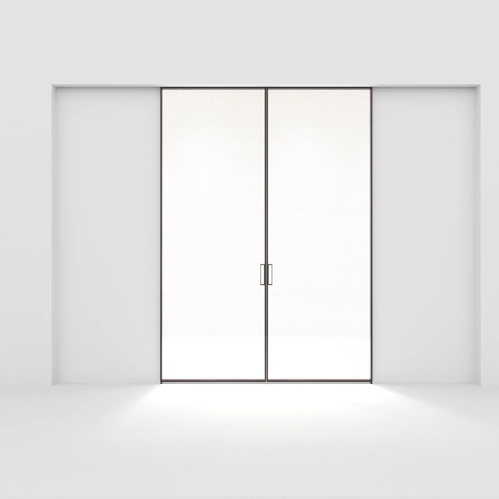

Videos y opiniones reales de quienes usan nuestros sistemas de vidrio.

Experiencias Pernia
Relatos directos de clientes, arquitectos y medios sobre nuestros productos.
Clientes satisfechos
Experiencias Pernia Glass
"Nuestros clientes valoran la calidad y el compromiso en cada proyecto."
Cobertura en medios
Logos y fotos de prensa destacada


Más Relaciones Públicas
Participación en ferias, exposiciones y eventos
Nuestra presencia se extiende más allá de la prensa: colaboramos con instituciones culturales y participamos activamente en eventos internacionales sobre el vidrio y el diseño.
- Exposición “Innovación en Vidrio” — Museo de Arquitectura Contemporánea, 2024
- Panel internacional “Tendencias del vidrio en la arquitectura”, Madrid Design Week, 2023
- Colaboración con la Universidad de Bellas Artes para el ciclo “Materiales y Ciudad”, 2023
- Participación en la Feria Internacional de Diseño de Interiores, Panamá, 2022
¿Te gustaría colaborar con nosotros o cubrir nuestro trabajo en tu medio? Nuestro equipo de PR está disponible para nuevas alianzas y propuestas.